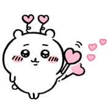
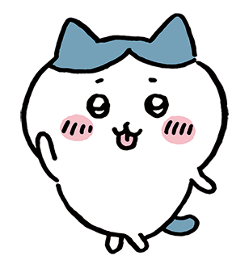

blog
-

chiikawa
by sana, july 9th 2024the character 'chiikawa' is one of the main characters in the show 'chiikawa', which centers around the adventures of antimorphic animals, earning money and their day to day activities.
learn more -

hachiware
by sana, july 9th 2024hachiware is also apart of the main trio on the show 'chiikawa', the character itself is the only one who can use human language (initially). his character is modelled off of the 'hachiware' cat.
learn more